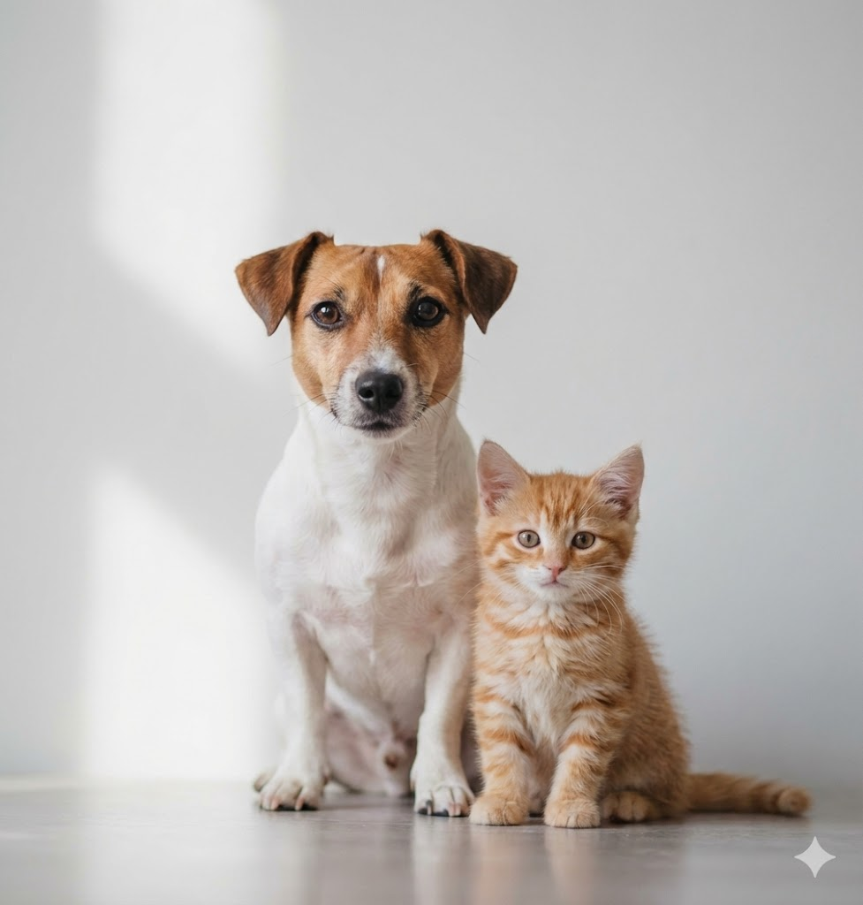

Para los dueños
Consejos y tips para tus mascotas


Somos la red que une personas con mascotas, cuidadores y amantes de los animales. Cada animal merece un hogar lleno de amor.

¿Qué puedes hacer aquí?
Encuentra tu compañero perfecto entre perros y gatos que buscan un hogar. Filtra por raza, tamaño y edad.
Ver mascotas →Participa en foros sobre cuidado animal, comparte experiencias y recibe consejos de dueños expertos.
Ir al foro →Participa en jornadas de vacunación, ferias de adopción y actividades de bienestar animal en tu barrio.
Ver eventos →Para los dueños
Regístrala en nuestra plataforma y conecta con familias responsables que quieren adoptarla en tu barrio.